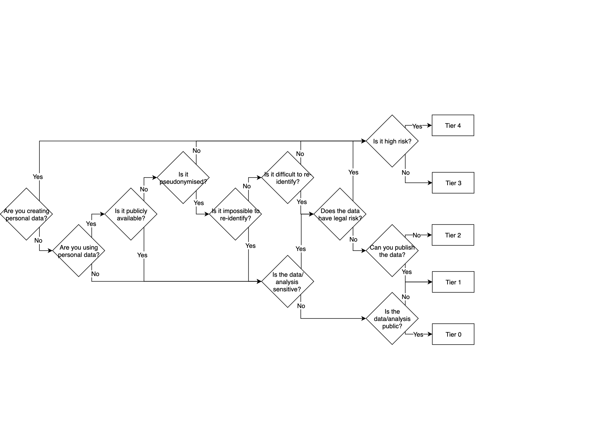

Classification process¶
Work Packages¶
Assessing the sensitivity of a dataset requires an understanding of both the base sensitivity of the information contained in the dataset and of the impact on that base sensitivity of the operations that it will undergo in the research project. The classification exercise therefore relates to each stage of a project and not simply to the datasets as they are introduced into it.
In our model, projects are divided into work packages, which we use here to refer to the activities carried out within a distinct phase of work carried out as part of a project, with a specific outcome in mind. A work package can make use of one or more datasets, and includes an idea of the analysis which the research team intends to carry out, the potential outputs they are expecting, and the tools they intend to use – all important factors affecting the data sensitivity. Classification is carried out on work packages rather than individual datasets.
Caution
Classification to a tier is not a property of a dataset, because a dataset’s sensitivity depends on the data it can be combined with, and the use to which it is put.
Classification roles¶
In our data governance model, there are three key roles:
- Investigator
The research project lead, this individual is responsible for ensuring that project staff comply with the Environment’s security policies.
- Dataset Provider Representative
A representative of the organisation who provided the dataset under analysis. The Dataset Provider will designate a single representative contact to liaise with the Investigator, authorised to certify sharing of datasets with the researchers.
- Referee
A Referee volunteers to review code or derived data (data which is computed from the original dataset), providing evidence to the Investigator and Dataset Provider Representative that the researchers are complying with data handling practices.
To classify the data to be used in a project, each role representative will go through a series of questions, to help understand the legal sensitivity of the data involved, and the consequences of a data breach.
Classification process¶
The Dataset Provider Representative and Investigator must agree on a classification for each work package. If the classification is likely to be Tier 2 or higher, they should also involve an independent Referee. Prior to datasets being transfered to the Data Safe Haven, it is likely that only the Dataset Provider Representative will have access to the actual dataset(s). The Investigator (and Referee if necessary) will need to make their classification judgements based on discussions with the Dataset Provider Representative, alongside a clear description of the dataset and associated metadata such as data dictionaries.
The Dataset Provider Representative, Investigator and Referee (if applicable) should independently classify the work package using the classification flow shown below.
Important
For auditability, the full path of decisions made should be recorded, not just the final outcome.
The project should only proceed if the Investigator, the Dataset Provider Representative, and the Referee (if applicable), can come to a consensus on a work package classification. If consensus cannot be reached, the work package should be reconsidered.
Warning
The Data Safe Haven project does not currently Tier 4 environments. If a work package is classified as Tier 4 then an alternative environment will be needed.
If the classification is Tier 3 or below, the dataset(s) should be ingressed into an environment at that Tier to which the Investigator and Referee (if applicable) have access, so that they can verify the classification based on complete information. If at this point either the Investigator or Referee disagree with the original classification, the consensus seeking process between the Data Provider Representative, Investigator and Referee (if applicable) should be repeated. If consensus cannot be achieved the dataset(s) must be deleted from the environment.
If, at any point during the project, the research team decides to analyse the data differently or for a different purpose than previously agreed, this constitutes a new work package, and should be newly classified by repeating this process. This is also the case if the team wishes to ingress another dataset in combination, which will require Representatives from all Dataset Providers to arrive at the same consensus as the Investigator and Referee (if applicable).
Classification workflow¶
Flowcharts demonstrating how we classify work packages can be seen here:
Secure data analysis¶
Once a work package has been classified, an appropriate SRE is instantiated depending on the tier assigned.
For the initial work package in a project, a new environment must always be deployed. For additional work packages, the project may deploy a new environment per work package or, where appropriate, add the new work package to an existing environment deployed for the project.
When considering adding a work package to an existing environment, the combination of the new work package plus all existing work packages the environment has already been used for must be considered as the effective work package when making classification decisions. The classification tier of a combination of work package(s) can never be lower than the highest classification tier of any of the individual work packages, but may be higher due to additional risks introduced by combining datasets and activities across work packages. If the combined classification is higher than the tier associated with the existing environment, a new environment must be deployed.
Attention
The classification tier of an environment cannot be upgraded or downgraded “in place”.